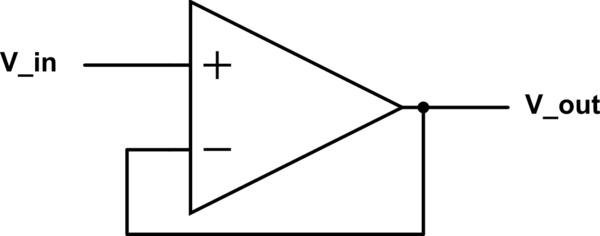
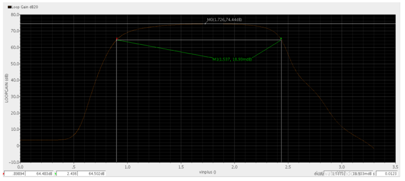
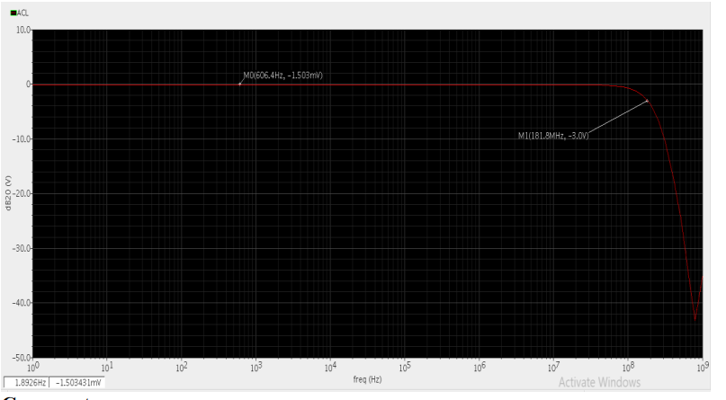
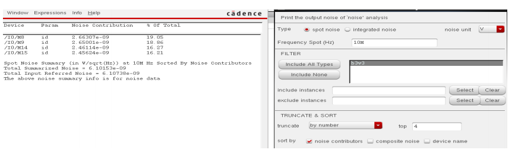
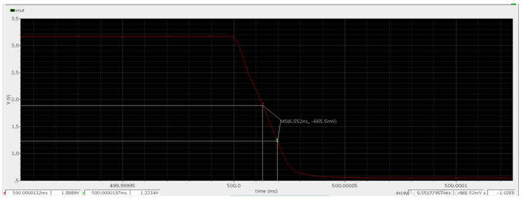
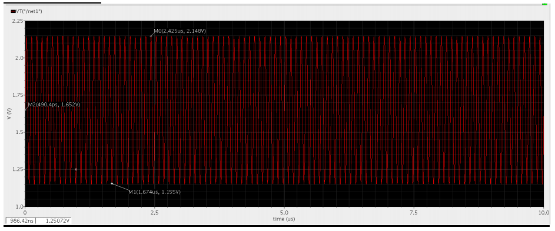
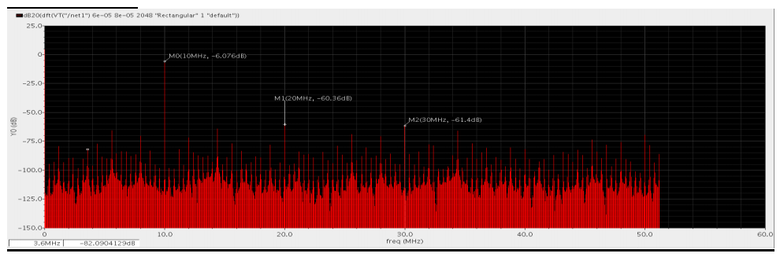
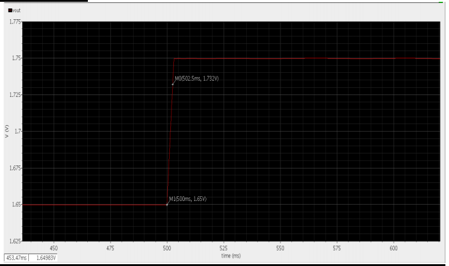
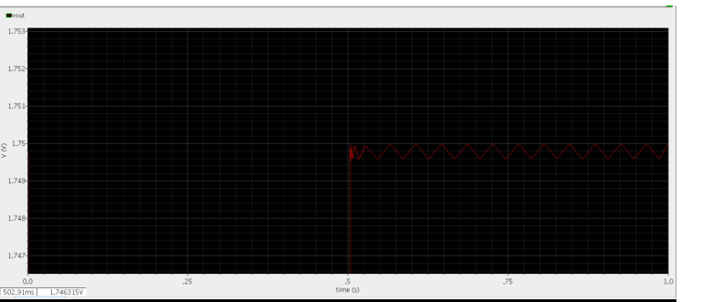

اللهم لا علم لنا الأ ما علمتنا به انك انت علام الغيوب
Introduction
Folded Cascode Operational Amplifier for non-Inverting Use
Operational Amplifier ModelInverting Amplifier
New Solution(Gm over Id)
Requirement 1
Write a SPICE subcircuit that describes an op-amp with an open-loop gain of 1e4
and a UGF of 10MHz. Use comments generously to describe every line of the netlist.
Report the SPICE subcircuit and explain how you chose the circuit parameters.
Folded Cascode Operational Amplifier for Buffer Use
Operational Amplifier Model

Buffer
specifications
\(V_{DD}=3.3V\)
\(V_{in,CM}={V_{DD} \over 2}=1.65V\)
\(A_{DC}>55dB\)(DC differential gain)
\(GBW>100MHz\)
\(SlewRate>100V/ \mu sec\)
\(Output Swing>1.5V_{PP}\)
\(Input \space referred \space thermal \space noise \space density < 10nV/\sqrt{Hz}\)
$${805mV}<{V_g \space of \space M_o}<{850mV}$$
if we choose max we will have max GBW and smallest phase margin and if we take min opposite will occur so it is better
to choose value in between like 830mV
Small Signal Analysis
Model Parameter Extraction neglecting short channel effects
\(K_n:16\mu A/V^2\)
\(Vth_{n} ~=620mV\)
\(K_p:6\mu A/V^2\)
\(Vth_{p} ~=630mV\)
\(L=1\mu m\)(Large L Bad merits of using this solution)
Gain-Bandwidth product is 113.7 MHz and DC-gain=74.35dB
STB Gain and Phase Versus Frequency
transferfunction configurationstability
Gain-Bandwidth product is 113.7 MHz and DC-gain=74.35dB
Plot the DC-gain versus Vout (report when DC-gain drops by 10dB to verify specifications)

output swing
Output Swing is of value = 1.54Vpp > 1.5Vpp
Closed Loop Frequency Response
Plot the closed-loop (CL) frequency response. What is ACL and BWCL

Frequency Response
Bandwidth is extended to 181.8 MHz and DC gain remains -1.503 mdb (Buffer since it ‘s very near to 0)
Input referred noise
Simulate input-referred noise and tabulate top 4 contributors @10MHz

Input referred noise
Total input referred noise is of value 6.1 nV/ sqrt(Hz) < 10nV/sqrt(Hz)
What is the difference between those results and previous open-loop AC results?
Using Probe sees another capacitance when measuring at input port of the opamp
slew rate

slewrate
Slew rate is 102v/usec. > 100v/usec
DFT and Harmonic Distortion
Apply a sine input signal of 1Vpp @10MHz and plot Vout (add proper input DC
value). Plot DFT (in dB) and calculate harmonic distortion HD2, HD3, and THD
(comment).

transient

DFT
AT 10 MHZ, The harmonic distortion=-6 db is clearly high since the source is excited at 10
MHz. 𝐻𝐷2 = −60.36 + 6.07 = −54.29 𝑑𝑏,𝐻𝐷3 = −61.4 + 6.07 = −55.33 𝑑𝑏.THD is calculated as percentage,so THD =372E-3 % ,which means the harmonic distortion is very
small nearly negligible
Fractional Gain error
Plot Vout for a small step input of 100mV (add proper input DC value). Calculate the
fractional gain error (FGE) and 1% settling time (compare with hand analysis).

settlingtime
Comment:
-from the previous :Ts=502.5-500=2.5msec.
-To calculate it analytically:𝑇𝑠 = 4/(𝑘𝐺𝐵𝑊), since GBW=2*pi*181.8 MHz as it ‘s shown in
ClosedLoop frequency response so Ts=3.5 ns.

ripple
Comment:
We can note that the analytical value is very different to the practical value and that’s because PM is
not very big nearly 66 deg. and that causes ringing as shown in the previous figure , so this suggests
that the system is not underdamped and that’s why this equation 𝑇𝑠 = 4/(𝑘𝐺𝐵𝑊) doesn’t hold.
-Calculating FGE:
from the closed loop frequency response 𝐴𝑐𝑙 = 0.9998 = −1.503 𝑚𝑑𝑏
so 𝐹𝐺𝐸 = |𝑖𝑑𝑒𝑎𝑙 𝑔𝑎𝑖𝑛 − 𝑎𝑐𝑡𝑢𝑎𝑙 𝑔𝑎𝑖𝑛|/𝑖𝑑𝑒𝑎𝑙 𝑔𝑎𝑖𝑛 = 1 − 0.9998/1 = 200𝐸 − 6.
Analytically: 𝐹𝐺𝐸 = 1/𝑘𝐴𝑜, since loop gain in buffer=74.34 db, so FGE=192E-6.
So as shown the two values practical and analytical are comparable.